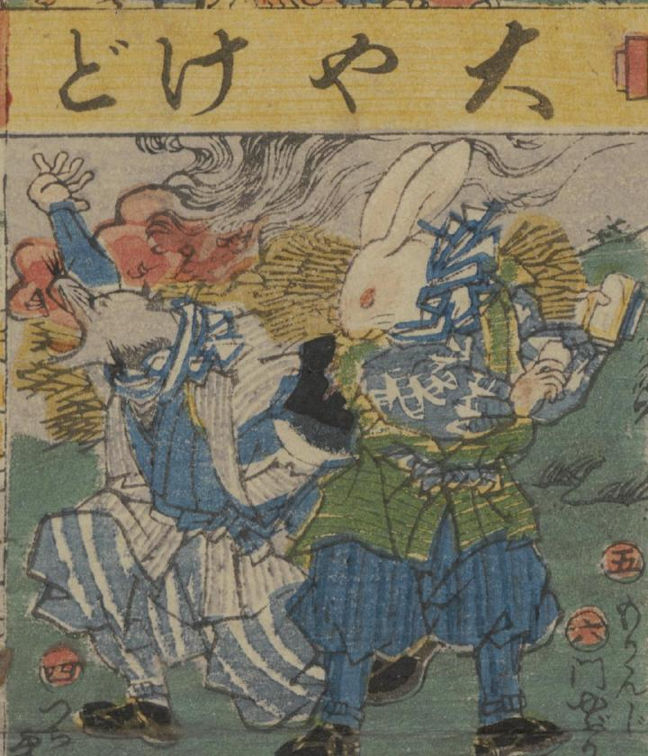

『かちかち山』のお爺さんの仕返しをするために、ウサギがタヌキの背負った柴に火をつけた。背中の柴が燃えてタヌキが叫んでいる。
著作者：一惠齋芳㡬／出典：親書誌：U426_nichibunken_0381：昔咄赤本壽語禄；ムカシバナシ アカホン スゴロク／日付：2014／資源識別子：U426_nichibunken_0381_0001_0020
Copyright (c)2010- International Research Center for Japanese Studies, Kyoto, Japan. All rights reserved.